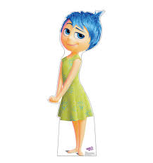
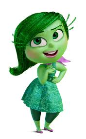
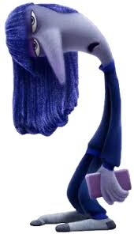
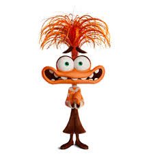

|  |
Joy |
The main protagonist of the movie, and she is the human form of Riley's Joy. |
Inside Riley's Mind: Joy |
|  |
Disgust |
One of the main emotions. She first appeared when Riley hated broccolis. |
Inside Riley's Mind: Disgust |
|  |
Ennui |
Also known as the boredom, Ennui controls the console using a phone because she's too lazy to stand up. |
Inside Riley's Mind: Ennui |
|  |
Anxiety |
She is the main antagonist of the movie. She gave Riley a panic attack because she was obssessed with controlling the console. |
Inside Riley's Mind: Anxiety |
 |
Anger |
He may always be angry, but he is not always the rage guy. |
Inside Riley's Mind: Anger |